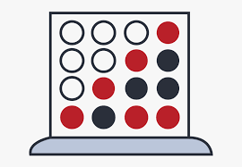
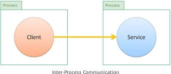

What I've Worked on so Far:
As the final project for the class Programming Languages which I took during the Fall 2023 semester, I was tasked with recreating the game Connect 4 in Java using Java FX. Some notable features of this version of Connect 4 are the AI opponent whose difficulty can be toggled via the menu, a save and load feature, and a log that tracks the most recent move made. The demo video can be found here.
During my Spring 2024 semester I took the class "Introduction to Computer Systems." In this class, the majority of our assigments were in C++ over the course of the semester we covered concepts such as inter-process communication, threading, and concurrency to name a few. Being such a hands-on class, there were several programming assignments that required us to apply these concepts in several ways to help us gain a better understanding of them.
Over the course of the summer, I worked together with a team of other students to create a learning app called ReadWell. Similar to Canvas and other such learning sites, teachers would be able to assign homework to their students and view their progress in the form of a report. My main focus for the duration of the project was developing the frontend for the teacher view of the app.